MatrixPotentialMS¶
About the MatrixPotentialMS class¶
The WaveBlocks Project
@author: R. Bourquin @copyright: Copyright (C) 2010, 2011, 2012, 2013, 2014, 2015, 2016 R. Bourquin @license: Modified BSD License
Inheritance diagram¶

Class documentation¶
-
class
WaveBlocksND.MatrixPotentialMS(expression, variables, **kwargs)[source]¶ This class represents a matrix potential
 . The potential is
given as an analytic
. The potential is
given as an analytic  matrix expression. All methods use
pure numerical techniques because symbolical calculations are unfeasible
for 3 or more energy levels.
matrix expression. All methods use
pure numerical techniques because symbolical calculations are unfeasible
for 3 or more energy levels.-
calculate_eigenvalues()[source]¶ Calculate all the eigenvalues
 of the potential .
We can not do this by symbolic calculations, hence the function has an empty
implementation. We compute the eigenvalues by numerical techniques in the corresponding
evaluate_eigenvalues_at function.
of the potential .
We can not do this by symbolic calculations, hence the function has an empty
implementation. We compute the eigenvalues by numerical techniques in the corresponding
evaluate_eigenvalues_at function.
-
calculate_eigenvectors()[source]¶ Calculate all the eigenvectors
 of the potential .
We can not do this by symbolic calculations, hence the function has an empty
implementation. We compute the eigenvectors by numerical techniques in the corresponding
evaluate_eigenvectors_at function.
of the potential .
We can not do this by symbolic calculations, hence the function has an empty
implementation. We compute the eigenvectors by numerical techniques in the corresponding
evaluate_eigenvectors_at function.
-
calculate_exponential(factor=1)[source]¶ Calculate the matrix exponential 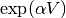. In the case of this class the matrix is of size
thus the exponential
can not be calculated analytically for a general matrix. We use numerical
approximations to determine the matrix exponential. We just store
the prefactor  for use during numerical evaluation.
for use during numerical evaluation.Parameters: factor – The prefactor in the exponential.
-
calculate_hessian()[source]¶ Calculate the Hessian matrix 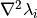 of the potential’s eigenvalues
 with
with  . For potentials
which depend only one variable, this equals the second derivative and 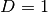.
Note that this function is idempotent.
. For potentials
which depend only one variable, this equals the second derivative and 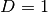.
Note that this function is idempotent.
-
calculate_jacobian()[source]¶ Calculate the Jacobian matrix
 of the potential’s
eigenvalues with . For potentials
which depend only one variable, this equals the first derivative and .
Note that this function is idempotent.
of the potential’s
eigenvalues with . For potentials
which depend only one variable, this equals the first derivative and .
Note that this function is idempotent.
-
calculate_local_quadratic(diagonal_component=None)[source]¶ Calculate the local quadratic approximation matrix 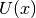 of the potential’s eigenvalues in
. This function can be used for the homogeneous case
and takes into account the leading component 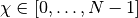.
If the parameter  is not given, calculate the local quadratic approximation
matrix of all the potential’s eigenvalues in
is not given, calculate the local quadratic approximation
matrix of all the potential’s eigenvalues in  . This case
can be used for the inhomogeneous case.
. This case
can be used for the inhomogeneous case.Parameters: diagonal_component – Dummy parameter which has no effect here.
-
calculate_local_remainder(diagonal_component=None)[source]¶ Calculate the non-quadratic remainder matrix
 of the
quadratic approximation matrix of the potential’s eigenvalue matrix
. In the homogeneous case the matrix
of the
quadratic approximation matrix of the potential’s eigenvalue matrix
. In the homogeneous case the matrix  is given by
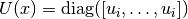 where in the inhomogeneous case it
is given by 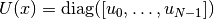.
is given by
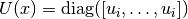 where in the inhomogeneous case it
is given by 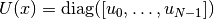.Parameters: diagonal_component (Integer or None(default)) – Specifies the index of the eigenvalue  that gets expanded into a Taylor series
that gets expanded into a Taylor series  . If set to
. If set to
Nonethe inhomogeneous case is computed.
-
evaluate_at(grid, entry=None, as_matrix=True)[source]¶ Evaluate the potential
elementwise on a grid  .
.Parameters: - grid (A
Gridinstance. (Numpy arrays are not directly supported yet.)) – The grid containing the nodes we want
to evaluate the potential at.
we want
to evaluate the potential at. - entry (A python tuple of two integers.) – The indices
 of the component
of the component  we want to evaluate or
we want to evaluate or Noneto evaluate all entries. - as_matrix – Dummy parameter which has no effect here.
Returns: A list containing
 numpy ndarrays of shape
numpy ndarrays of shape  .
.- grid (A
-
evaluate_eigenvalues_at(grid, entry=None, as_matrix=False, sorted=True)[source]¶ Evaluate the eigenvalues
elementwise on a grid .Parameters: - grid (A
Gridinstance. (Numpy arrays are not directly supported yet.)) – The grid containing the nodes we want
to evaluate the eigenvalues at. - entry (A python tuple of two integers.) – The indices of the component 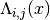
we want to evaluate or
Noneto evaluate all entries. If then we evaluate the eigenvalue .
then we evaluate the eigenvalue . - as_matrix – Whether to include the off-diagonal zero entries of in the return value.
Returns: A list containing the numpy ndarrays, all of shape
.- grid (A
-
evaluate_eigenvectors_at(grid, sorted=True)[source]¶ Evaluate the eigenvectors
elementwise on a grid .Parameters: grid (A Gridinstance. (Numpy arrays are not directly supported yet.)) – The grid containing the nodes we want
to evaluate the eigenvectors at.Returns: A list containing the  numpy ndarrays, all of shape
numpy ndarrays, all of shape  .
.
-
evaluate_exponential_at(grid)[source]¶ Evaluate the exponential of the potential matrix
on a grid .Parameters: grid (A Gridinstance. (Numpy arrays are not directly supported yet.)) – The grid containing the nodes we want
to evaluate the exponential at.Returns: The numerical approximation of the matrix exponential at the given grid nodes. A list contains the exponentials for all entries , each having
a shape of .
-
evaluate_hessian_at(grid, component=None)[source]¶ Evaluate the list of Hessian matrices
 at some grid
nodes for one or all eigenvalues.
at some grid
nodes for one or all eigenvalues.Parameters: - grid (A
Gridinstance. (Numpy arrays are not directly supported yet.)) – The grid nodes the Hessian gets evaluated at. - component – The index of the eigenvalue .
Returns: The value of the potential’s Hessian at the given nodes. The result is an
ndarrayof shape is we evaluate at a single
grid node or of shape
is we evaluate at a single
grid node or of shape  if we evaluate at multiple
nodes simultaneously.
if we evaluate at multiple
nodes simultaneously.- grid (A
-
evaluate_jacobian_at(grid, component=None)[source]¶ Evaluate the list of Jacobian matrices 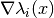 at some grid nodes
for one or all eigenvalues.Parameters: - grid (A
Gridinstance. (Numpy arrays are not directly supported yet.)) – The grid nodes the Jacobian gets evaluated at. - component – The index of the eigenvalue .
Returns: The value of the potential’s Jacobian at the given nodes. The result is a list of
ndarrayeach of shape 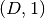 is we evaluate at a single grid node or of shape if we evaluate at multiple nodes simultaneously.
if we evaluate at multiple nodes simultaneously.- grid (A
-
evaluate_local_quadratic_at(grid, diagonal_component=None)[source]¶ Numerically evaluate the local quadratic approximation matrix of the potential’s eigenvalues in
at the given grid nodes .Parameters: - grid (A
Gridinstance. (Numpy arrays are not directly supported yet.)) – The grid containing the nodes  we want to
evaluate the quadratic approximation at.
we want to
evaluate the quadratic approximation at. - diagonal_component – Specifies the index of the eigenvalue
that gets expanded into a Taylor series .
Returns: A list of tuples or a single tuple. Each tuple 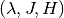 contains the the evaluated eigenvalue 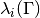, its Jacobian 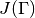 and its Hessian
 in this order.
in this order.- grid (A
-
evaluate_local_remainder_at(grid, position, diagonal_component=None, entry=None)[source]¶ Numerically evaluate the non-quadratic remainder 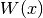 of the quadratic approximation of the potential’s eigenvalue
at the
given nodes .Warning: do not set thediagonal_componentand theentryparameter both toNone.Parameters: - grid – The grid nodes the remainder
 gets evaluated at.
gets evaluated at. - position – The point
 where the Taylor series is computed.
where the Taylor series is computed. - diagonal_component (Integer or
None(default)) – Specifies the index of the eigenvalue
that gets expanded into a Taylor series and whose
remainder matrix ![W(x) = V(x) - \text{diag}([u_i,\ldots,u_i])](../_images/math/b03b7cf72e5b53dbaba8fbcec763c9f8f46a1434.png) we evaluate. If set to
we evaluate. If set to Nonethe inhomogeneous case given by![W(x) = V(x) - \text{diag}([u_0,\ldots,u_{N-1}])](../_images/math/57b61314cefee8e2e4d21d95a07a156dc5530c51.png) is computed.
is computed. - entry (A python tuple of two integers.) – The entry
 of the remainder matrix
that is evaluated.
of the remainder matrix
that is evaluated.
Returns: A list with
ndarrayelements or a singlendarray. Each containing the values of . Each array is of shape
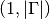.
. Each array is of shape
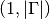.- grid – The grid nodes
-
get_dimension()¶ Return the dimension
 of the potential .
The dimension is equal to the number of free variables
of the potential .
The dimension is equal to the number of free variables  where
where  .
.
-
get_number_components()¶ Return the number
of components the potential
supports. This is equivalent to the number of energy levels .
-